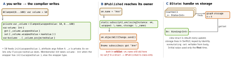

swift · folio
In one line: @propertyWrapper (SE-0258, Swift 5.1) is a type with a wrappedValue;
annotating @W var x makes the compiler store a hidden _x: W and turn
x into a computed property forwarding to _x.wrappedValue —
plus $x for projectedValue. SwiftUI’s @State,
@Binding, @AppStorage and Combine’s @Published are just such types.
Download PDF Print view LaTeX source


How it works
- Required:
var wrappedValue. Optional:projectedValue(any type —Binding, a publisher, the wrapper itself),init(wrappedValue:)(enables= default),init(projectedValue:)(enables passing$arg). - Composition
@A @B var x: T: storage_x: A<B<T>>, access_x.wrappedValue.wrappedValue; outer to inner, left to right;$xis the outermost wrapper’s projection. - Where: stored
varproperties of types; locals (Swift 5.4); function and closure parameters (SE-0293, 5.5) — that is howForEach($items) { $item in TextField("", text: $item.name) }works (Bindinghasinit(projectedValue:)). - Enclosing-instance subscript (underscored, used by
@Published): if the wrapper declaresstatic subscript(_enclosingInstance:wrapped:storage:), the compiler routes access through it with the owning object and two key paths — so the wrapper can reachself(e.g.objectWillChange). Class-only:Published.wrappedValueis marked unavailable, “@Published is only available on properties of classes”. @State: aDynamicPropertyholding a handle; SwiftUI finds it on the view, allocates storage in its graph (per view identity), updates the handle beforebody.$n=Binding.@Binding: a struct ofget/setclosures to someone else’s storage;@dynamicMemberLookup, so$user.nameis aBinding<String>. Noinit(wrappedValue:)→ the child’s memberwise init takes aBinding:Child(n: $count).@AppStorage("key"): aDynamicPropertyoverUserDefaults; the view re-renders when that key changes;$=Binding. Bool/Int/Double/String/URL/Data +RawRepresentable.
Limits
- Not on
let,lazy,weak/unowned, computed properties, or a property with its ownget/set(willSet/didSetare allowed). - A protocol cannot require a wrapper — only the plain property.
- Inline storage (
@Clamped): the setter ismutating— needs avarowner; external storage (@State) usesnonmutating set.
Example — a wrapper + the enclosing subscript
@propertyWrapper struct Clamped<V: Comparable> {
private var value: V; let range: ClosedRange<V>
init(wrappedValue v: V, _ r: ClosedRange<V>) {
range = r; value = Self.clamp(v, r) } // = 50 lands here
var wrappedValue: V {
get { value }
set { value = Self.clamp(newValue, range) } } // mutating set
var projectedValue: ClosedRange<V> { range } // $volume
static func clamp(_ v: V, _ r: ClosedRange<V>) -> V {
min(max(v, r.lowerBound), r.upperBound) }
}
// the shape @Published uses to reach its owner:
static subscript<Owner: AnyObject>(_enclosingInstance o: Owner,
wrapped: ReferenceWritableKeyPath<Owner, Value>,
storage: ReferenceWritableKeyPath<Owner, Self>) -> ValueTraps
self.count = 5in a View’sinitdoes not seed@State— write_count = State(initialValue: 5); and only the first init wins.@State var items = load()runsload()on every view init, result discarded after the first.$vm.name.sink { }readingvm.nameinside gets the old value (willSet); use the closure’s parameter.- Two wrappers:
$xprojects only the outermost one. - Wrappers hide semantics (persistence, threading) at the call site — great for cross-cutting concerns, costly when overused.
Remember
“x is a computed façade, _x is the wrapper, $x is the
projection. Storage inside = value; storage outside = survives the struct.”